This manual explains the basic operations of the concept mapping tool. Click on one of the links below to learn how to do each of these activities:
1. Create a node
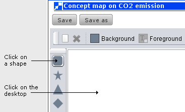
A new node appears.
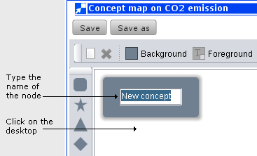
Every node in your concept map must be connected to at least one other node.
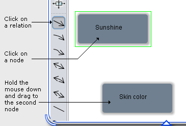
Release the mouse when a green border appears around the second node.
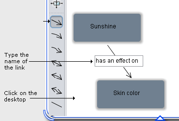
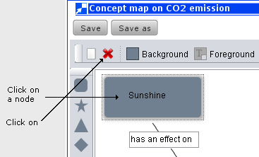
A pop-up window appears. Click the Yes button if you want to remove the node.
Follow the same steps to remove a link (while keeping the nodes). The only difference, of course, is that you need to click on the link that you want to remove instead of on the node.
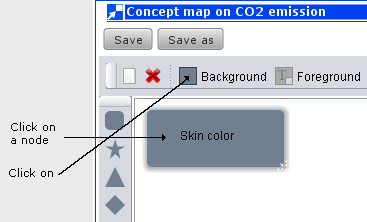
A colour palette appears. Click on the colour of your choice.
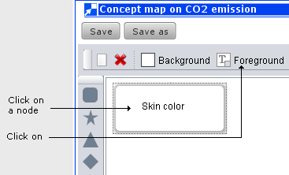
A colour palette appears. Click on the colour of your choice.
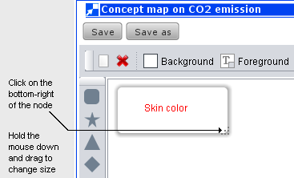
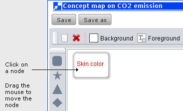
| Button | Function |
|---|---|
| 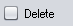 | Removes all nodes and links at once |
| Displays the user-selected background colour (see Change the colour of a node) | |
| Displays the default background colour (i.e., light grey) | |
|
Displays a light-grey border around a node (this colour cannot be changed) |
| 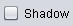 | Displays no border around a node |